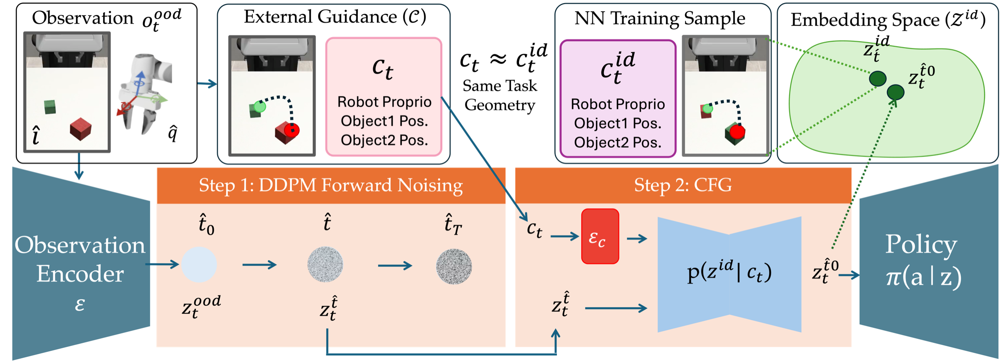
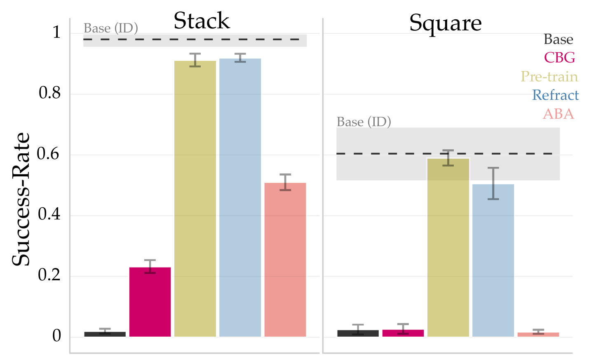
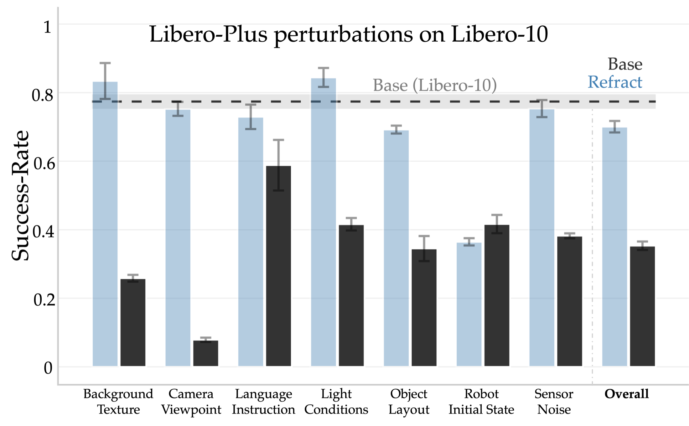
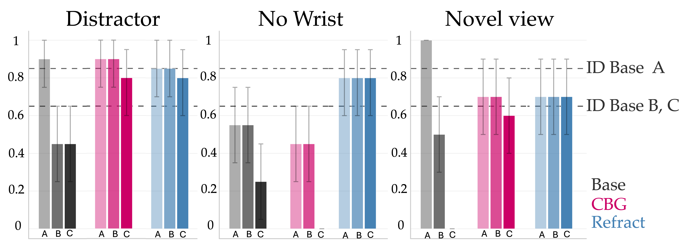

Base (failure)
Video placeholder
Generative robot policies can be adapted at inference time by steering action generation with external guidance. However, action-space steering is fundamentally constrained by the action distribution induced by input observations. When deployment-time observations drift, this distribution may assign little probability mass to the desired behavior, limiting the effectiveness of steering. We alternatively propose observation-space steering, i.e., we steer generative robot policies by remapping out-of-distribution (OOD) observations to in-distribution (ID) embeddings that induce the desired behaviors. Concretely, we first learn to generate ID observation embeddings, conditioned on the external guidance. Then, at inference-time, we map incoming observations to ID embeddings via SDEdit-style diffusion editing. The base policy stays frozen throughout. We call this approach REFRACT. Across two simulated tasks and one real-world manipulation task, REFRACT recovers in-distribution policy performance under visual distribution shifts, outperforming action-space steering. Interestingly, REFRACT performs comparably to policies pre-trained with access to the guidance, demonstrating that re-indexing within a frozen embedding space can substitute for learning a new policy conditioned on the guidance. We conduct ablation experiments to characterize how the choice of external guidance and the mechanism of generating ID embeddings affects REFRACT. Finally, we show that REFRACT scales to multi-task policies, recovering in-distribution performance across diverse perturbations from Libero-Plus.

We evaluate on Stack and Square tasks from MimicGen under three OOD environments created by switching object colors (stack), distractors(square), missing wrist-camera observations, and novel viewpoints.
Base: A vanilla single-task visuomotor diffusion policy
CBG: Action-space steering baseline.
Pre-train: Diffusion policy pre-trained with task-relevant features
ABA: Steers observation embeddings using retrieval.
REFRACT (Ours): Steers observation embeddings using SDEdit by training a conditional diffusion model.

The wrist-camera video is shown only for visualization; during evaluation, the policy receives a black image.
We evaluate REFRACT on the LIBERO-10 tasks under OOD conditions from the LIBERO-Plus benchmark. The base policy is a pre-trained vision- and language-conditioned diffusion policy. For REFRACT, we train a multi-task diffusion model to generate in-distribution vision-language embeddings across all ten tasks, enabling steering within the multi-task base policy's entangled observation-embedding space.

A unified REFRACT model steers a frozen vision-language diffusion policy across all ten LIBERO-10 tasks. Under LIBERO-Plus perturbations, the base policy's average success rate drops by 0.42; REFRACT recovers to within approximately 0.08 of the in-distribution baseline.
REFRACT fails under novel initial states because success requires novel behavior outside the base policy’s training distribution.
Success
Failure
We evaluate REFRACT on a real-world robot manipulation task using a Franka Research 3 manipulator on a block-stacking task, where the robot must pick up a small green block and place it on the red block.

Subgoal A is a successful grasp, subgoal B is selecting the right behavior mode (left or right), and subgoal C is stacking. REFRACT is able to recover the base policy’s in-distribution performance on the final goal. It outperforms CBG on the “No Wrist” perturbation and matches on the others.
Success
Failure
Success